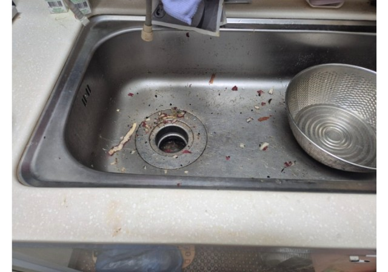

안녕하세요 고고고 설비입니다. 요번 현장은 싱크대 막힘 문제가 있다고 하셔서 출동하였습니다.
안성 공도 아파트 주방에 도착하자마자, 싱크대에 남은 물이 시원하게 빠지지 않고 싱크대 막힘이 뚜렷했습니다. 게다가 역류가 반복되어 주방 한 부분이 젖을까 걱정될 정도였어요. 이 상황은 매우 불편하고 위생상 문제도 크기에, 최대한 조심스럽고 꼼꼼하게 접근했습니다.
첫 번째 단계로 석션기를 사용해 고여 있던 물과 찌꺼기를 흡입했어요. 음식물 찌꺼기나 기름기 등 비교적 가벼운 이물질은 석션기로 충분히 제거할 수 있었고, 이렇게 첫 길을 트는 작업이 이후 도구를 사용하기 수월하도록 도왔습니다. 이 장비는 부드러운 막힘 제거에 정말 유용하더라고요.
그다음으로는 배관 내시경을 통해 어디가 막혔는지 눈으로 확인했어요. 내시경 화면에는 기름과 슬러지가 두껍게 쌓여 있는 모습이 선명하게 보였고, 원인과 위치를 정확히 파악하는 데 크게 도움이 되었습니다.
내시경으로 위치를 확인한 뒤에는 플렉스 샤프트를 투입했습니다. 회전축 끝에 체인과 헤드가 달려 있어, 마치 스케일링하듯 배관 내부의 이물질을 부드럽게 털어주는 방식이에요. 단순히 밀어내기보다 회전력을 이용해 찌꺼기를 분쇄해 내기 때문에, 겉으로는 느끼지 못했지만 내부에서는 꽤 단단한 제거 효과가 있었어요.
샤프트가 분해한 찌꺼기들은 다시 석션기로 흡입했습니다. 이 과정을 여러 차례 반복해, 처음엔 꽤 걸리던 찌꺼기가 점차 없어지는 모습을 확인할 수 있었어요. 마치 배관이 새로 생긴 것처럼 점점 깨끗해지는 과정이었죠.
작업이 마무리된 뒤에는 물을 가득 받아 한 번에 흘려보내는 통수 테스트를 진행했습니다. 그 결과, 더 이상 싱크대 역류 없이 시원하게 물이 내려가는 것을 직접 확인할 수 있었어요. 이때 느낌은 마치 막힌 숨통이 트인 듯 개운했답니다.
마지막으로 고객님과 함께 내시경 화면을 보며, 막혔던 찌꺼기가 말끔히 제거된 모습을 보여드렸어요. 이제는 안심하고 싱크대를 사용하셔도 된다고 말씀드리자, 정말 환하게 웃으시던 모습이 기억에 남습니다. 안성 공도 싱크대 막힘이 이런 방식으로 자연스럽게 해결됐습니다.